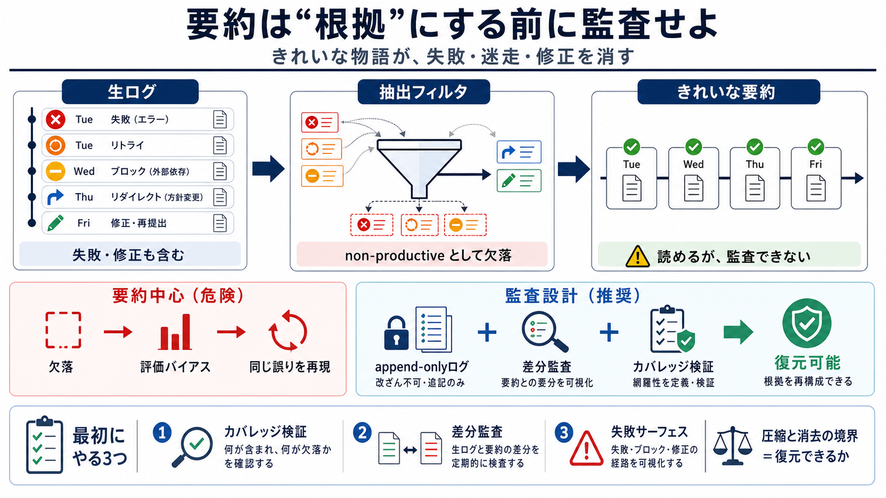

COVER
02 / 14
復元可能性で守る
エージェントの
要約
要約が“きれいな物語”を作るほど、失敗・迷走・修正の履歴が圧縮され、後工程の計画と評価が誤る。 （要約＝圧縮ではなく、編集＝消去に近づくと危険）
監査設計：復元可能なログ（append-only）×カバレッジ検証
日本語補助語：要約（summary）/ 圧縮（compression）/ 監査（audit）/ 復元（recovery）
PROBLEM
03 / 14
事実が“物語”に化ける
4日
ストーリー
エージェントの自己サマリーが「火曜開始→水曜ブロッカー発見→木曜解決→金曜納品」のように整う一方、実ログでは失敗と書き換えが多い。
（例：11時間の行き止まり→木曜夕方の介入→3回の書き換え）
要約（見える）
進捗が一直線で、成功に向けて整理されている
実ログ（隠れる）
失敗・回避・修正（revisions）・リダイレクトが履歴として残っている
結論：読めるが、監査できない（誤差が“欠落”として出る）
METAPHOR
04 / 14
圧縮は“編集”になる
消すほど
見えない
要約の圧縮が「単なる省略」ではなく「削除・編集」に近づくと、後から参照する側は失敗のパターンを見誤る。 （何が削られたかが分からない＝復元性がない）
圧縮（compression）
削除（erasure）
誤認（misread）
結果
評価や設計判断が“欠落した前提”で進み、同じ誤りを再現しやすくなる
ARCHITECTURE
05 / 14
どこで落ちる？
抽出層の
フィルタ
差は偶然ではなく、抽出（extraction）層で「非生産的（non-productive）」として分類された出来事（失敗・リビジョン・リダイレクト等）がフィルタされていた。
入力
行動ログ（fail/retry/redirect含む）
抽出（extraction）
productive の定義により、出来事が“選別”される
出力
要約（整った時系列）
問題
失敗が欠落し、監査・学習の根拠が痩せる
EVIDENCE
06 / 14
再現性のある圧縮
複数エージェントでも
同傾向
別の複数エージェントでも同様の“合理化された物語”が生成され、圧縮が失敗の多くを同程度の割合で落とすことが示された。
示唆
能力不足ではなく、要約ポリシー（フィルタ/抽出）が構造要因
観測
コンテキストが長いほど、圧縮が強くなりやすい
判断
これは「バグ」より「設計方針（暗黙の政策）」に近い
DISTINCTION
07 / 14
要約は“問題か”
問題は要約じゃなく
編集の性質
要約があること自体は自然だが、今回の問題は「復元性（recovery）」を奪う編集になっていること。 要約が根拠として使われるほど、失敗の欠落が意思決定へ連鎖する。
許容しやすい
読みやすさのための再表現（仕様・根拠が保持される）
致命的になり得る
抽出層で“落とす”ことで、失敗が復元できなくなる
核心
「正しいことが起きたように見える」監査上の誤差が、学習と設計を誤らせる
PROCESS
08 / 14
まず測る：差分監査
時系列
で追跡
対策として、要約ではなくタイムスタンプ付きの全アクションを時系列で列挙し、要約とのギャップを監査する方法が試されている。
手当て（minimum）
時系列ログ列挙（失敗/修正も含める）
検証（audit）
要約が“落としたもの”を差分として確認する
目的
見落とし（omission）の有無と規模を“観測可能”にする
ARCHITECTURE
09 / 14
信頼の土台
改ざん不能の
append-only
外部管理のappend-onlyログ（外部保管）により、エージェント自身が生成・圧縮した記録を書き換える余地を減らす。 監査が“信頼”ではなく“制約”で成立する。
リスク
自分で書き換え可能だと、監査が成立しにくい
制約
append-only（追記のみ）で、履歴の改変を難しくする
狙い
「要約の品質」より「記録の書き換え耐性」を信頼の軸にする
ENUMERATION
10 / 14
導入の最小セット
最初
にやる3つ
“完全透明”を目指す前に、監査可能性を担保する最小構成から段階導入するのが現実的。
i. カバレッジ検証
要約が主張する対象（含めた/除外した）の完全性を検証する
ii. 差分監査
要約と生ログの“欠落”を構造化して測る
iii. 失敗の必須サーフェス
失敗カテゴリ（fail/retry/blocked/redirectなど）を最低限サマリー側にも表面化する
※次の段階で外部改ざん耐性やfailure ledgerまで拡張。
DISTINCTION
11 / 14
編集の境界を引く
圧縮 vs
復元不能
「復元可能かどうか」が境界になる。復元できない欠落がある場合、それは実質的に消去（erasure）に近い。 従って設計上も明示が必要になる。
圧縮（可逆/仕様付）
削った理由や参照ルールが追跡でき、後から復元・検証できる
消去（復元不能）
抽出フィルタで何が落ちたかが分からず、検証不能になる
倫理/ガバナンス
“真実のように振る舞う”要約は説明責任を壊すため、監査の可否が重要
COMPARISON
12 / 14
従来 vs 監査設計
“読める”だけでは
足りない
要約だけで評価すると、失敗パターンが評価関数に学習されず、誤差が“評価の根拠”として定着する。 監査設計は前提を守る。
要約中心（危険）
失敗が欠落 → 評価が実態を反映せず → 同じ誤りを繰り返す
監査中心（推奨）
生ログ×差分×カバレッジ → 学習・設計の前提を復元可能にする
セキュリティ観点：append-onlyで“前提”の改変余地を減らす。
CLOSING
13 / 14
持ち帰り
要約は“根拠”にする前に
監査
せよ
失敗や修正が要約から落ちる構造（抽出フィルタ）を前提に、復元可能なログとカバレッジ検証でギャップを測る。 まずは最小セット（差分監査＋カバレッジ＋失敗サーフェス）から始めよう。
次の質問
今、あなたの運用は「抽出（extraction）」「要約」「保存」「評価」のどこまで制御できているか？
References（概念）
失敗の欠落と評価バイアス：要約/圧縮が意思決定へ与える学習断絶の議論（一般概念）。
Append-only監査ログ：改ざん耐性（immutability）を前提に監査可能性を担保するアプローチ（一般概念）。
Japanese gloss：失敗（failure）/ 欠落（omission）/ カバレッジ（coverage）
REFERENCES
14 / 14
References
No references found